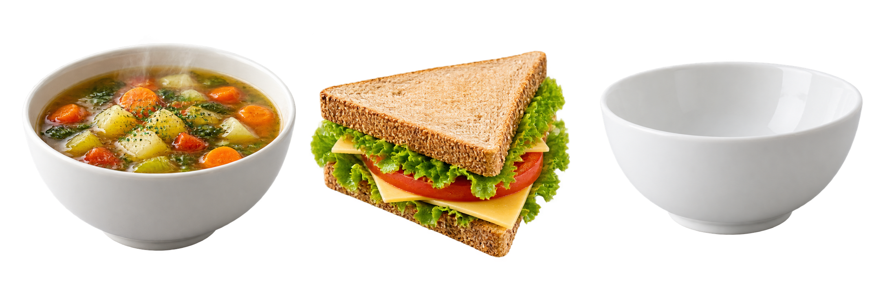

Vocabulary practice · 4A
What do you eat?
Plan a breakfast for two
WORD BANK · Study first. Cover the word bank for memory games.
Food and drink4A
Food
- bread
- rice
- fish
- cheese
- eggs
- tomatoes
- bananas
- apples
Drinks
- milk
- tea
- coffee
- juice
an egg → eggs · a tomato → tomatoes
a banana → bananas · an apple → apples
Practice words
